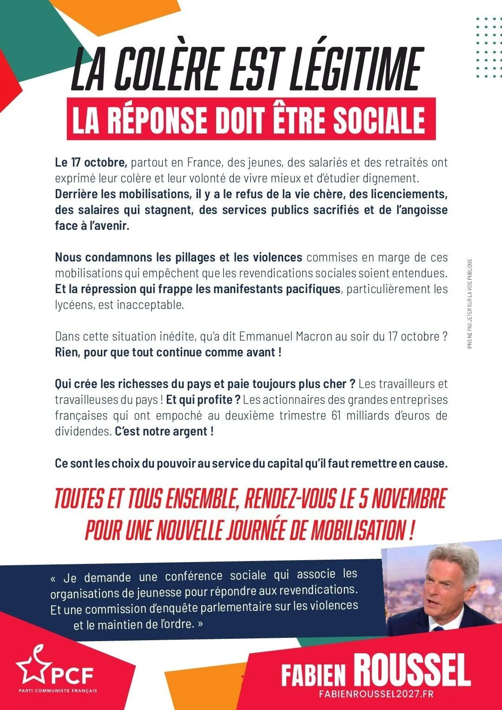
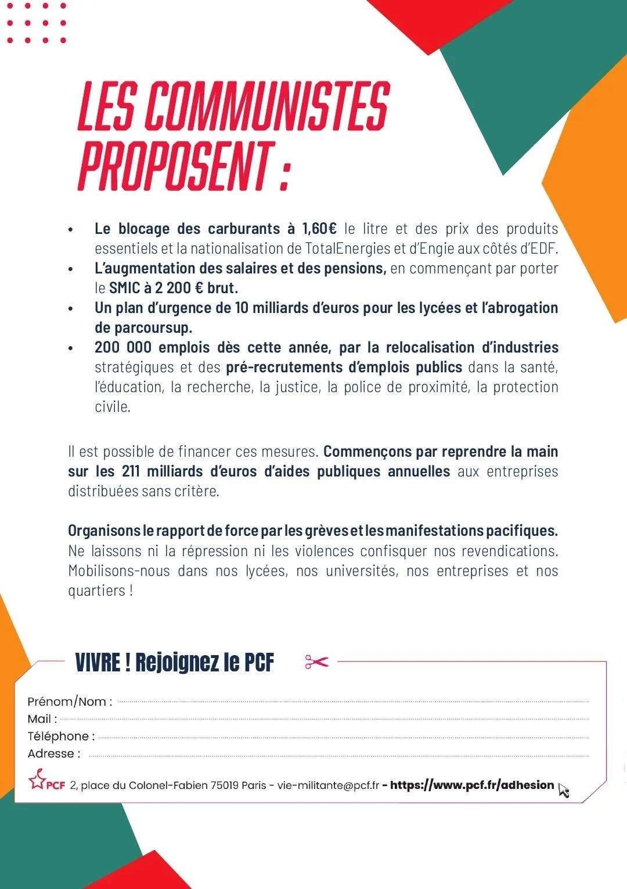

Publication du PCF 79
Le tract du PCF 79 pour les mobilisations du 24 octobre et du 5 novembre
Date indiquée par Facebook · 23 octobre 2026
Légende originale du PCF 79
Avant la journée d'action du 5 novembre, rassemblement samedi 24 octobre devant la gare à Niort.
#24octobre
Repères éditoriaux
Nous avons publié ce tract dans la séquence du rassemblement du 24 octobre à Niort et de la journée du 5 novembre. Notre publication donne rendez-vous devant la gare pour le premier rassemblement.


Sources
PCF 79 · relevé Meta et fil Facebook · FB-1446618547651394
À lire aussi · 24 octobre. Nous donnions rendez-vous devant la gare de Niort